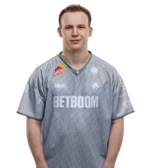

tN1R CS2 Crosshair
Team Spirit
Last update:
Share code · Settings › Crosshair › Import
CSsCoPC6G5Rf28vk8rbfXCsDOmR4RUMhWawq7rWNQqXJ8G
Console · Paste in the CS2 console (~)
cl_crosshair_drawoutline "0"; cl_crosshair_dynamic_maxdist_splitratio "1"; cl_crosshair_dynamic_splitalpha_innermod "0"; cl_crosshair_dynamic_splitalpha_outermod "1"; cl_crosshair_dynamic_splitdist "3"; cl_crosshair_dynamic_spread_limit "227"; cl_crosshair_gap "0"; cl_crosshair_length "2"; cl_crosshair_recoil "0"; cl_crosshair_screen_height "960"; cl_crosshair_t "0"; cl_crosshair_thickness "2"; cl_crosshaircolor_a "255"; cl_crosshaircolor_b "0"; cl_crosshaircolor_g "255"; cl_crosshaircolor_r "11"; cl_crosshairdot "0"; cl_crosshairoutline_a "255"; cl_crosshairoutline_b "0"; cl_crosshairoutline_g "0"; cl_crosshairoutline_r "0"; cl_crosshairstyle "4"; cl_ironsight_dot_scale "1"; cl_ironsight_usecrosshaircolor "0"
About tN1R's crosshair
tN1R plays for Team Spirit. This is the exact CS2 crosshair tN1R used in an official match on 17/10/2026, read directly from the match demo.
- Color
- #0BFF00
- Length
- 2
- Thickness
- 2
- Gap
- 0
- Center dot
- No
- Outline
- No
- T-style
- No
- Opacity
- 100%
How to use tN1R's crosshair in CS2
- Click Copy next to the share code.
- In CS2, open Settings › Game › Crosshair.
- Click Share or Import and paste the code.
Or copy the console commands, open the CS2 console (~) and paste them. More questions in the FAQ ›